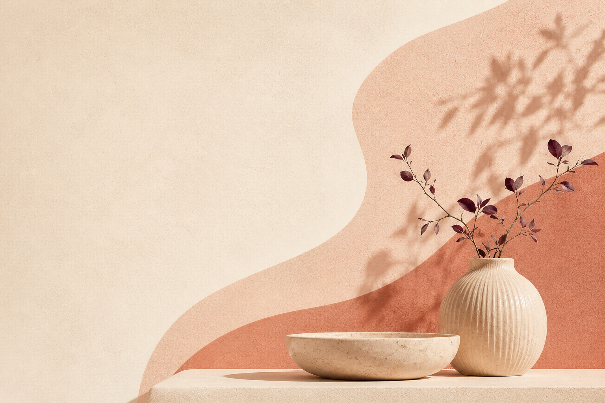

Ответь на несколько бережных вопросов. Навигатор поможет собрать ситуацию, сформулировать предварительный запрос и увидеть реалистичный следующий шаг.
7–10 минут · конфиденциально · без диагнозов

Что сейчас складывается
Это предварительное отражение, а не диагноз. Его задача — помочь яснее начать разговор с собой или со специалистом.
Сейчас важнее получить живую помощь
По вашему ответу похоже, что вы не чувствуете себя в безопасности. Навигатор не будет продолжать обычную интерпретацию ситуации.
Что можно сделать сейчас
Свяжитесь с человеком, которому доверяете, или с местной экстренной службой. Если есть непосредственная угроза жизни или здоровью, обратитесь за срочной помощью по номеру экстренных служб вашего региона.
Этот экран не является медицинской консультацией. Его задача — не оставлять вас один на один с небезопасной ситуацией.
Короткая обратная связь
Она поможет сделать навигатор точнее.
Спасибо
Ваши ответы сохранены. Можно оставить практику себе или познакомиться со специалистом, которого навигатор рекомендует для следующего шага.
Рекомендованный специалист
Диана Ким
Психолог-консультант · трансформационный коуч
Подходит вашему маршруту
Поможет уточнить запрос и выбрать бережный, реалистичный следующий шаг.
Внутренняя опораДеньги и реализацияСамоценностьЖизненные переходы